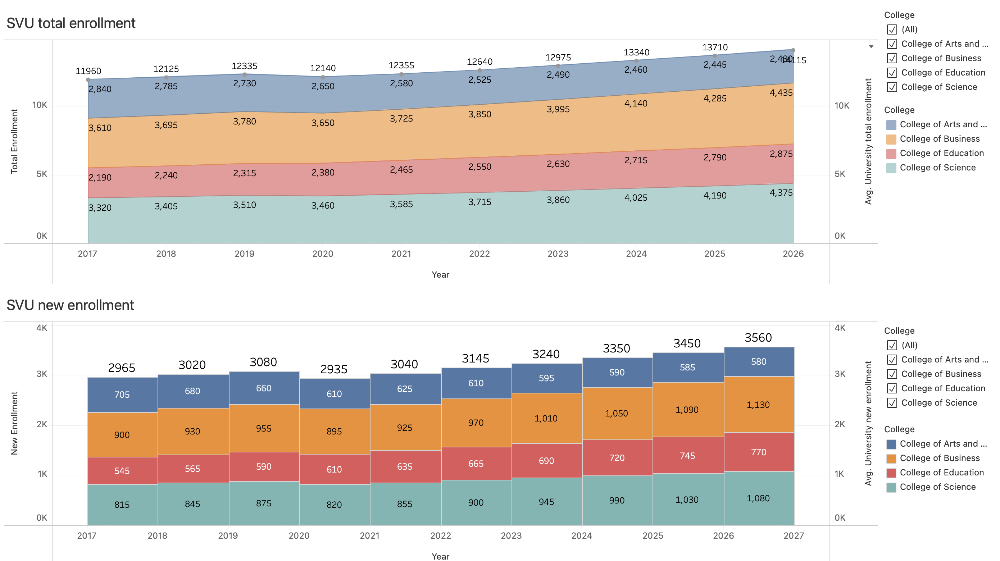

Sierra Vista University
Once again, the instructions are not as detailed as module 9. You may need to collaborate with your peers today.
I suggest you don’t leave the lab before you finish it.
If you need any help, please let me know.
Create a new document
-
Start by downloading this zip file and extracting the CSV file from it.
-
Create a new document in Tableau Public and upload the
SVU total enrollment.csvfile.
First chart
-
On Sheet 1, make sure you have Year as Date, then make it the x‑axis of your graph.
-
Your y‑axis is the Total Enrollment.
-
You want to visualize each College as a different color in a Area Graph.
-
Show the numbers for each value for each college on each each year.
-
We want the total sum too, so we we’ll have to create a Calculated Field with the formula
{ FIXED [Year] : SUM([Total Enrollment]) }. Call that calculated field University total enrollment. -
This new Calculated Field will also be on your y‑axis. (This should create two graphs, don’t panic. Whatever you do, don’t panic.)
-
Change the University total enrollment on your y‑axis from sum to average.
-
Do you see that on your Marks area you have the sub areas, All, SUM(Total Enrollment), and AVG(University total enrollment)? Go to the AVG(University total enrollment) and remove colors from College.
-
Make the graph for AVG(University total enrollment) Lines, not Area.
-
You don’t want two graphs, so you need to specify that your y‑axis values are on a Dual Axis.
-
Did you find it? Good job! You may have two different y‑axis still. Go ahead and right-click on the y‑axis on the right and select Synchronize Axis. Now you can hide that Header.
-
Did the labels clash? Change your University total enrollment to Dimension not Measure.
-
You want to be able to filter for College, and it needs to be visible.
Second chart
-
Add a New Data Source and upload the
SVU new enrollment.csvfile. -
Create a New Worksheet. On this new sheet, select the SVU new enrollment.csv
-
Once again, make sure you have Year as Date, then make it the x‑axis of your graph.
-
Your y‑axis is the Total Enrollment, but you want the graph as a bar, with different colors for each *College.
-
Show the numbers for each value for each college on each each year.
-
We want the total sum too, so we we’ll have to create a Calculated Field with the formula
{ FIXED [Year] : SUM([New Enrollment]) }. Call that calculated field University new enrollment. -
Remove colors from College for the AVG(University total enrollment) just like you did for the first graph.
-
You can keep the graph for AVG(University total enrollment) as Bars.
-
You don’t want two graphs, so you need to specify that your y‑axis values are on a Dual Axis.
-
Go ahead and right-click on the y‑axis on the right and select Synchronize Axis. Now you can hide that Header.
-
The gray graph covered your original graph? What if it had opacity 0?
-
Again, you want to be able to filter for College, and it needs to be visible.
Dashboard
-
Create a New Dashboard and change its size to 1400px × 800px.
-
Add Sheet 1 to the top and Sheet 2 to the bottom of the dashboard.
-
You may hide the Field Labels for Columns for both graphs too.
-
Edit the title of the first graph as SVU total enrollment. Set the type to Tableau Book, 18pt.
-
Edit the title of the second graph as SVU new enrollment. Set the type to Tableau Book, 18pt.

Visualize and share your dashboard
-
Click on the × next to your name on the top‑right of the page.
-
Click the Share button.
-
Click on the Copy Link button.
-
Paste the link on a new tab of your browser.
-
Copy the new URL from the address bar on the browser. (That’s the URL you need to submit on Canvas.)
Submission
Submit the second URL to Canvas.